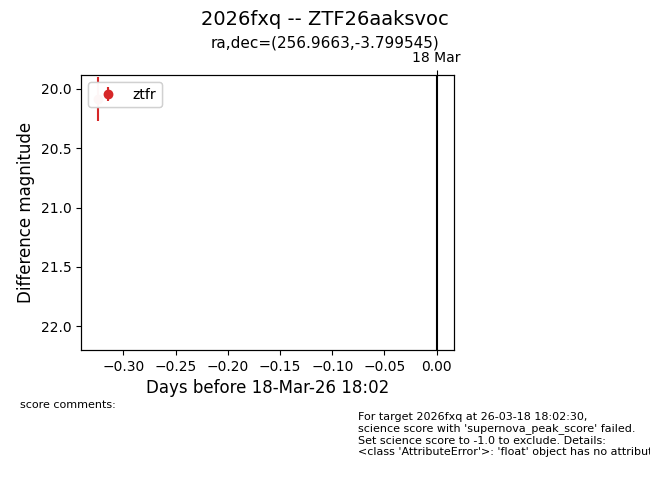
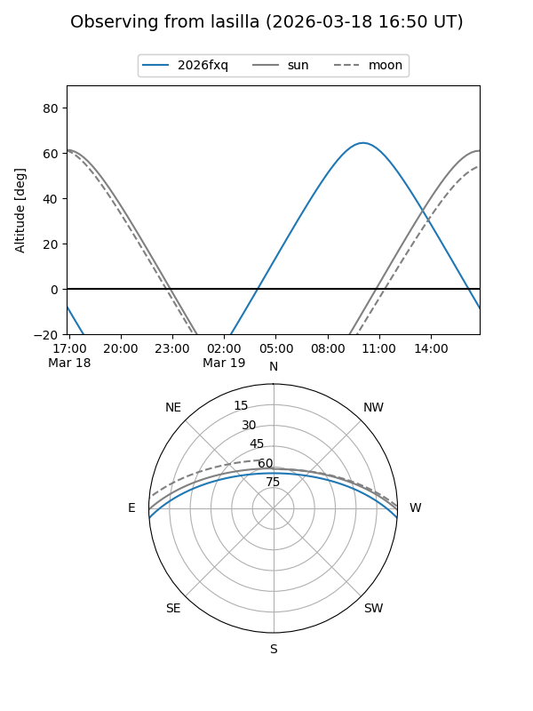
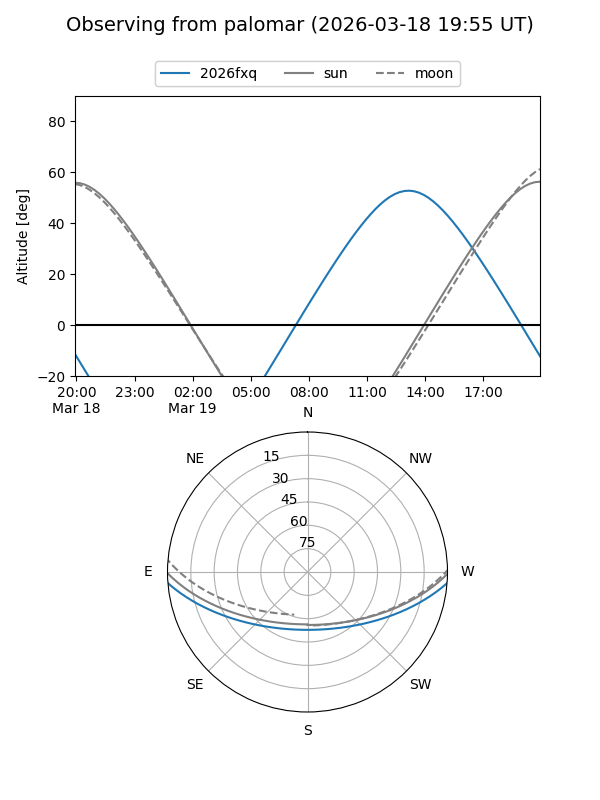
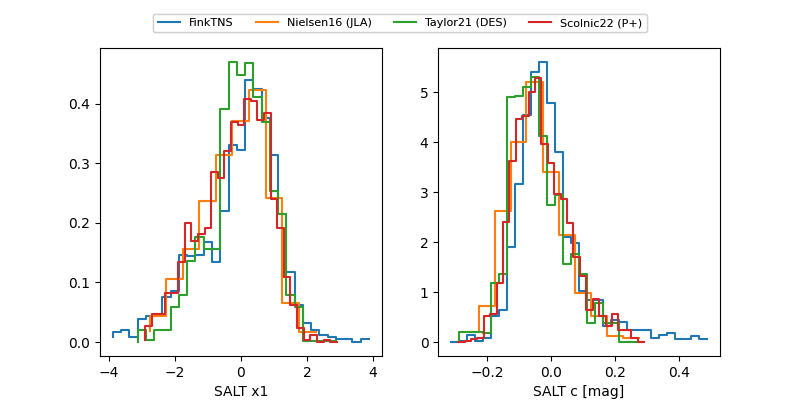

2026fxq
Target 2026fxq at 2026-03-18 18:04
Aliases and brokers:
FINK: link
Lasair: link
ALeRCE: link
TNS: link
YSE: link
alt names
ZTF26aaksvoc (ztf,fink_ztf)
2026fxq (tns,yse)
Coordinates:
equatorial (ra, dec) = 256.9663,-3.79954
equatorial (HMS+DMS) = 17:07:51.92,-03:47:58.36
galactic (l, b) = (16.9159,+20.95178)
Flags:
Photometry:
last ztfr=20.08
1 ztfr detections
Lightcurve

Visibility


Additional plots
